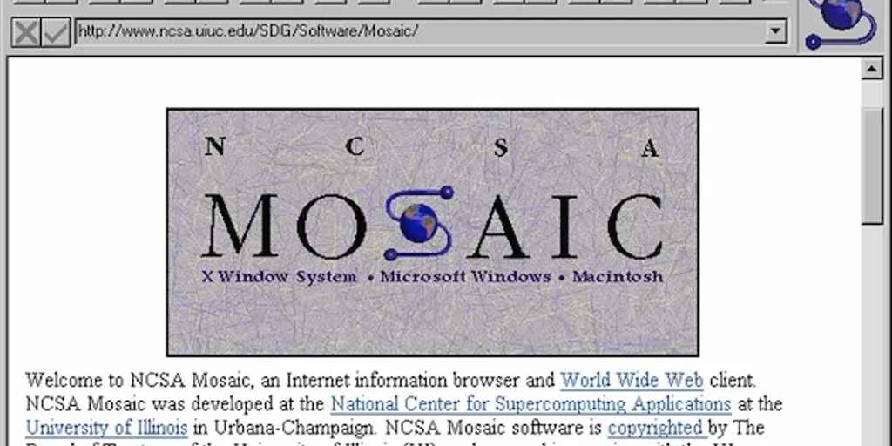

El nacimiento de ARPANET
El 29 de octubre de 1969, se envió el primer mensaje entre dos computadoras situadas en la UCLA y el Instituto de Investigación de Stanford (SRI). El mensaje pretendía ser "LOGIN", pero el sistema colapsó tras teclear "LO". Fue el primer enlace exitoso de la red de la agencia ARPA.
 Ref: Historia de ARPANET
Ref: Historia de ARPANET
Adopción del Protocolo TCP/IP
El 1 de enero de 1983, ARPANET cambió su protocolo de control de red original al protocolo TCP/IP. Este fue un hito crucial, ya que permitió que diferentes redes de computadoras se comunicaran entre sí mediante un estándar universal. Muchos consideran esta fecha como el "cumpleaños" oficial de Internet.

La invención de la World Wide Web
Tim Berners-Lee, científico del CERN, redacta la propuesta inicial de la WWW en 1989. Creó el lenguaje HTML, el protocolo HTTP y el primer navegador web. En 1991, la primera página web de la historia se hizo pública, explicando qué era el proyecto WWW.
Video: Entrevista a Tim Berners-Lee sobre la creación de la web.
Lanzamiento del navegador Mosaic
Desarrollado en el NCSA, Mosaic fue el primer navegador web ampliamente utilizado que incluía una interfaz gráfica de usuario. Permitió mostrar imágenes junto al texto, haciendo la web infinitamente más atractiva y accesible para el público general, impulsando el boom de Internet en los años 90.

Fundación de Google
Larry Page y Sergey Brin fundan Google en un garaje de California. Su algoritmo "PageRank" revolucionó los motores de búsqueda, organizando la inmensa y creciente cantidad de información de la Web basándose en la relevancia de los enlaces, dando forma a la navegación que conocemos hoy.

Nace Wikipedia
Jimmy Wales y Larry Sanger lanzan Wikipedia. Este hito demostró el verdadero poder de una web colaborativa y de código abierto. Consolidó la idea de que los usuarios podían ser creadores activos de información, sentando un precedente claro para la inminente era de la Web 2.0.
Ref: Historia de WikipediaLa era de la Web 2.0 (Facebook)
Mark Zuckerberg lanza "Thefacebook" en Harvard. Aunque no fue la primera red social, su éxito global simbolizó el establecimiento definitivo de la "Web 2.0". La web estática de lectura (Web 1.0) se transformó en una plataforma bidireccional, social e interactiva.
![[Image of Redes Sociales]](https://images.unsplash.com/photo-1611162617213-7d7a39e9b1d7?ixlib=rb-4.0.3&auto=format&fit=crop&w=800&q=80)
La Revolución Móvil (El iPhone)
Steve Jobs presenta el primer iPhone. Esto cambió radicalmente la forma en que el mundo accede a Internet. Los navegadores móviles y las aplicaciones (App Store en 2008) obligaron a la Web a volverse "Responsive" y a pensar primero en el usuario móvil (Mobile First).
![[Image of Smartphone]](https://images.unsplash.com/photo-1512054502232-10a0a035d672?ixlib=rb-4.0.3&auto=format&fit=crop&w=800&q=80)
Nacimiento de Bitcoin y Blockchain
Bajo el seudónimo de Satoshi Nakamoto, se lanza la red Bitcoin. Más allá de la criptomoneda, introdujo la tecnología "Blockchain", cimentando las bases conceptuales para la descentralización de la información y la propiedad digital, pilares de lo que hoy llamamos Web3.
![[Image of Blockchain]](https://images.unsplash.com/photo-1518546305927-5a555bb7020d?ixlib=rb-4.0.3&auto=format&fit=crop&w=800&q=80)
La Web Generativa (ChatGPT)
OpenAI lanza ChatGPT al público general, logrando millones de usuarios en días. Marca el inicio de la integración masiva de la Inteligencia Artificial en la Web. La forma de buscar información, crear código y redactar contenido cambia para siempre, inaugurando una web proactiva y semántica.
Video: El impacto de la Inteligencia Artificial Generativa.